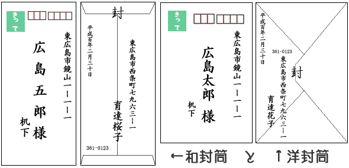
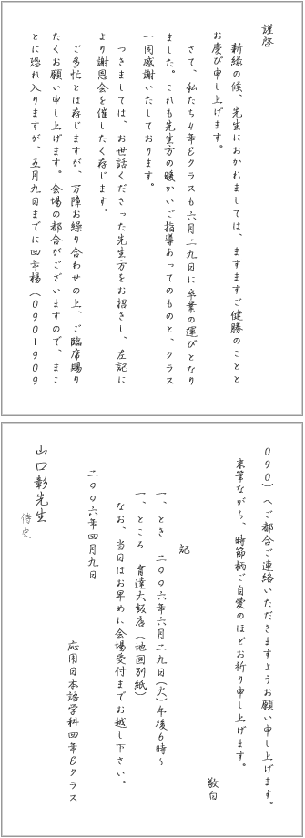
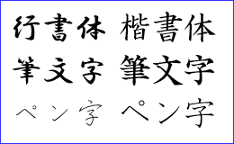
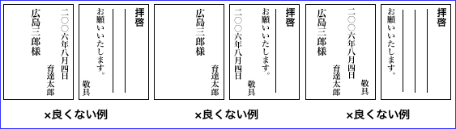
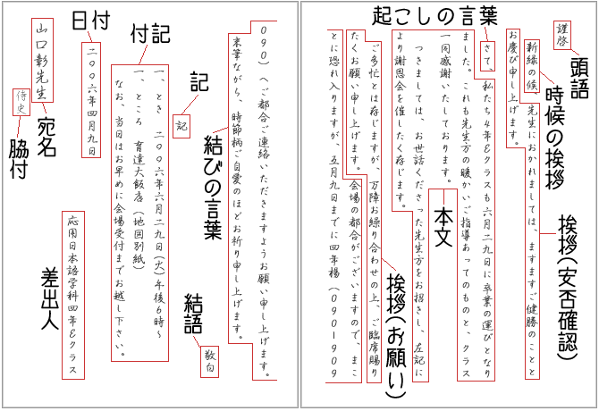
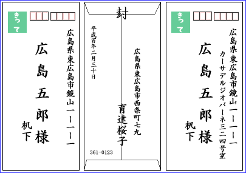
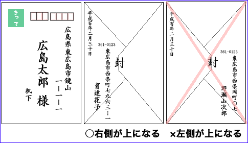
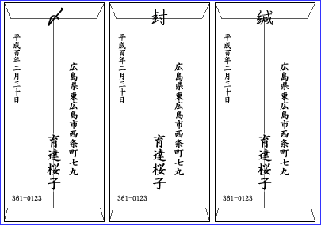

日文文書処理
案内状の作成
日本語で、案内状を作成しよう。
ここでは、謝恩会の招待状を作成することにする。
謝恩会
謝恩会とは、４年間の学生生活でお世話になった人たちに、感謝の気持ちを表わすために開く会のことである。日本では、卒業式のあとに、ホテルやレストランで卒業生と教職員が会食（パーティー）をするのがふつうである。
招待状の文面
まず、招待状の文面を考えなければならない。
以下に、日本語の手紙の基本的な構成と、招待状の場合のサンプルを示しておく。
手紙文の基本構成
| 構成 | 招待状の場合の例 |
| (注) 脇付は「御机下」「御侍史」などとする必要はない。また、「机下」は汎用のもので、「侍史」は特にていねいな表現となる。これは、「拝啓」と「謹啓」の関係と同様である。一般に、目上／同格／目下を問わず、「拝啓」で手紙が出せる相手であれば、「机下」としてよい。ただ、現在では脇付そのものが省略される傾向があるので、脇付をつけるときは、より丁寧な「侍史」を慣用に従って「御侍史」の形で使う方が無難という考えもありうる。 |
| 1 | 頭語 | 拝啓／謹啓（拝復／前略／冠省／急啓） |
| 2 | 前文 | 時候の挨拶 |
- 初春の候／大寒の候／例年にない寒さが続きますが
- 向春の候／春浅の候／梅のつぼみもそろそろふくらみ
- 早春の候／春寒の候／ようやく春めいてまいりましたが
- 陽春の候／春暖の候／若葉の光もさわやかになり
- 晩春の候／新緑の候／風薫る五月となりましたが
- 初夏の候／向暑の候／紫陽花の花が日ごとに色づいて
- 盛夏の候／炎暑の候／厳しい暑さが続いておりますが
- 残暑の候／晩夏の候／残暑なお厳しき折から
- 初秋の候／新涼の候／朝夕日ごとに涼しくなり
- 秋冷の候／秋涼の候／さわやかな秋となりましたが
- 晩秋の候／向寒の候／晩秋の気配を感じる今日このごろ
- 師走の候／初冬の候／年の瀬も押し迫ってまいりました
|
| 3 | 挨拶（安否確認、感謝） |
- 先生におかれましては、ますますご健勝のことと存じます。
- 先生におかれましては、いよいよご清祥のこととお慶び申し上げます。
- 先生におかれましては、ますますご清適のことと拝察申し上げます。
|
| 4 | 主文 | 起こしの言葉 | さて、／この度、 |
| 5 | 本文 |
- 私たち応用日本語学科４Ｄもいよいよこの６月に卒業を迎えることとなりました。これもひとえに先生方のご指導の賜物と厚く御礼申し上げます。つきましては、４年間の感謝の気持ちを表わすため、下記の通り謝恩会を計画いたしました。
- 私たち４年Ｅクラスも６月29日に無事卒業の運びとなりました。これも先生方の暖かいご指導あってのものとクラス一同感謝いたしております。つきましては、お世話くださった先生方をお招きし、下記により謝恩会を催したく存じます。
|
| 6 | 挨拶（お願い） |
- ご多忙とは存じますが、万障お繰り合わせの上ご臨席賜りたくお願い申し上げます。
- ご多用中のところ誠に恐縮に存じますが、何卒ご臨席賜りますようお願い申し上げます。
- 先生のご参加を一同心よりお待ち申し上げます。
|
| 7 | 末文 | 結びの言葉 |
- まことに恐れ入りますが、５月９日までにご都合ご返事賜りたくお願い申し上げます。
- ご多用中とは存じますが、ご都合お返事いただければ幸いです。末筆ながら、時節柄ご自愛のほどお祈り申し上げます。
- なお、ご欠席の場合、応用日本語学科４年楊（09********）までご連絡いただければ幸いに存じます。
|
| 8 | 結語 | 敬具／敬白（拝答／早々／草々／不一） |
| 9 | 付記 | 記 | 記 |
| 10 | 箇条書き |
- 一、日時 民国95年６月29日午後５時より
一、会場 貴族世家（竹南鎭頭份中華路）
なお、ご不明な点がございましたら、呂（09********）までお問い合わせください。
- 一、とき 2006年６月29日（火）午後６時〜
一、ところ 育達大飯店（地図別紙）
なお、当日はお早めに会場受付までお越し下さい。
|
| 11 | 後付 | 日付 | 民国95年４月９日／二〇〇六年四月九日 |
| 12 | 差出人 | 応用日本語学科４年Ｆクラス一同 |
| 13 | 宛名 | 黄其正主任／山口彰先生 |
| 14 | 脇付 | 机下／侍史(注) |
表を参考にして、ワープロやテキストエディタで、招待状の文面を作ってみよう。
謝恩会の招待状は、卒業生（全員）から教職員（目上の人たち）に宛てたものとなる。そのため、敬語を使った（できるだけ）ていねいな文章にする。
また、本文は長くなりすぎないようにする。ポイントを簡潔にまとめて書くように心掛ける。
招待状の形式
招待状は、はがきや封書で届けるのがふつうである。なお、はがきは略式になるので封書を使った方がよいだろう。

封筒は、洋封筒でも和封筒でも大きな違いはないが、白の二重封筒にした方がよい。カラーの封筒を使う場合は、できるだけ色の薄いものにする。
また、招待状は、横書きにしてもよいが、縦書きにした方がよりていねいである。
招待状の作成と印刷
はがきを使う場合は、はがきサイズで文書を作成し、インクジェットプリンタなどではがきの裏面に直接印刷すればよい。
封書を使う場合は、通常の文書と同様に作成し、Ａ４かＢ５の用紙に印刷すればよい。なお、用紙は、カラーのものは避け、白いものにした方がよい。
招待状の整形

招待状は、日本語の手紙の規則にあわせて整形しなければならない。
ここでは、封書を使う場合（Ａ４やＢ５の用紙に印刷する場合）の例を示す。
まず、招待状は、横書きよりも、縦書きにした方がていねいである（例では、縦書きにしている）。用紙の向きは、縦でも横でも構わない（例では、縦にしている）。
フォント（使用する文字）は、一般の文書の本文に使われる明朝体のほか、楷書体（筆文字・ペン字）、行書体（筆文字・ペン字）などを使うのがよいだろう（例では、行書体のペン字を使っている）。

フォントサイズ（文字の大きさ）は、読みやすさを考えて、少し大きめに設定するのがよいだろう。フォントによっても異なるが、14ポイントくらいが適当である（例では、14ポイントになっている）。
用紙の左右には１行分ほどの余白（マージン）をとるようにする。上下の余白は、上より下を大きくすると読みやすい（たとえば、上を２文字分、下を2.5文字分にする）。
２枚（２ページ）以上になる場合、日付や差出人・宛名など、後付の一部だけが最後のページに来ないようにする。

文書整形のポイント
| 構成 | 文書整形のポイント |
| 1 | 頭語 | １行目のいちばん上に書く。結語とあわせること。 |
| 2 | 前文 | 時候の挨拶 | 改行して１字下げるのが正式。略式では、頭語の後に１文字分あけて続ける。 |
| 3 | 挨拶（安否確認、感謝） | 時候の挨拶に続けて書く。 |
| 4 | 主文 | 起こしの言葉 | 改行して１文字下げる。 |
| 5 | 本文 | 起こしの言葉の後に続ける。内容ごとに段落に分け、段落の始まりは１文字下げる。 |
| 6 | 挨拶（お願い） | 本文に続ける。または、改行して１文字下げる。 |
| 7 | 末文 | 結びの言葉 | 挨拶に続ける。または、改行して１文字下げる。 |
| 8 | 結語 | 改行して、行のいちばん下に書く。末文と必ず同じページに書く。頭語とあわせること。 |
| 9 | 付記 | 記 | 改行して、行の真ん中か真ん中より少し上に書く。 |
| 10 | 箇条書き | 改行して始める。他の部分より上の余白を大きくする（全体に少し下げる）。箇条書きのマークは、「一、」「一、」「一、」となる（「一、」「二、」「三、」のようにはしない）。なお、箇条書きの項目に敬語や句点（「。」）は不要（例：○「六時から」、×「六時からです。」）。 |
| 11 | 後付 | 日付 | 改行して、本文より少しだけ下げて書く。年・月・日を書くのが正式（月・日だけは略式）。 |
| 12 | 差出人 | 改行して、宛名よりも小さめの文字で行のいちばん下に書く。連名の場合は、宛名に近い方が上位者になる。差出人が個人の場合、この部分は直筆にした方が良い。また、個人名は必ずフルネームで書くこと。 |
| 13 | 宛名 | 改行し、いちばん上に大きめの文字で書く。個人の場合、敬称は「様」がふつうだが、先生の場合は「先生」と書く（団体宛の場合は「御中」と書く）。 |
| 14 | 脇付 | 宛名の左下に少し小さめの文字で書く。 |

宛名を書く
宛名は、手書きにしても、プリンタで印刷してもよい。印刷するときは、筆文字のフォントを使うとよい（宛名は毛筆が正式とされているため）。

相手の住所は右上に書く。長い場合は２行に分けて書く。２行に分けて書くときは、２行目は１行目よりも下げて書くようにする。できるだけ省略せずに書くのがていねいである（たとえば、「東広島市鏡山1-1-1」でも問題はないが、「広島県東広島市鏡山1-1-1」の方がていねいである）。
相手の名前は、中央に大きめの文字で書く。住所よりも下げて書くのがふつうである。敬称は、個人の場合は「様」、団体の場合は「御中」が一般的である。なお、「殿」は、現在ではほとんど使われない。
裏面には、自分の住所（郵便番号）と名前、差出日を書く。差出日は、年月日を書くのが正式である。

なお、洋封筒の場合、折り返しの部分が向かって右側に来るようにする。左側に来るのは、葬式などの場合である。
封入と封印
まず、印刷した招待状を封筒に入れるために、封筒の大きさに合わせて折り畳まなければならない。
和封筒に入れる場合は、縦を３つ折り、洋封筒入れる場合は４つ折りにするのがふつうである。
折り畳んだ招待状を封筒に入れたら、糊などで封筒の口をしっかりと止める。
封の上には、「〆」「封」「緘」などと書くのがふつうである。
